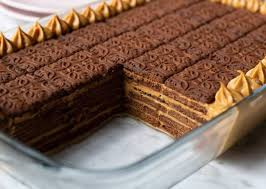

Receta chocotorta
- Mezclar queso crema y dulce de leche
- Mojar las gelletas en chocolatada o cafe
- Poner una capa de galletas mojadas en una fuente
- Poner una capa de la mezcla
Una vez finalizada la chocotorta, dejar reposar una 4/5 horas en la heladera. Pasado este tiempo, la chocotorta estara lista para disfrutar!
Receta milanesas

- Remojar las milanesas en una mezcla de huevo, sal y perejil
- Pasarlas por pan rallado
- Volverlas a pasar por la mezcla
- Pasarlas por pan rallado nuevamente
- Dejar un pedacito pequeño de milanesa en el aicete
- Con el aicete listo, empiece a freir las milanesas
- Retire las milanesas y vaya colocandolas en una fuente con sevilletas, para que absorba el exceso de aceite
- Dejar enfrias unos minutos
Una vez que enfriaron un poco, ya puede comer unas deliciosas milanesas